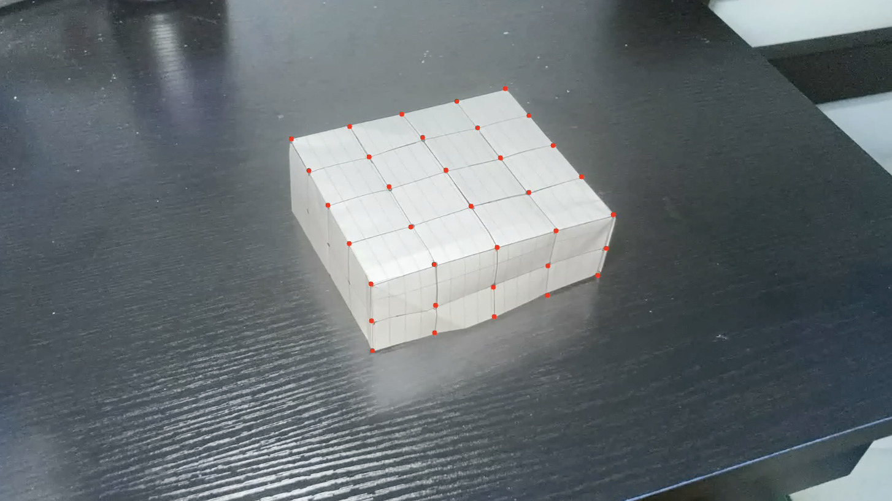

Tracking 2D Points
To add objects to a video that seem 3D, we need to establish a correspondence between the 2D points in the video with their 3D points in world coordinates. To begin, we initalize a tracker for every reference point that we set in the first frame of the video:

For every point marked, we also instantiate a list of their corresponding points in 3D.